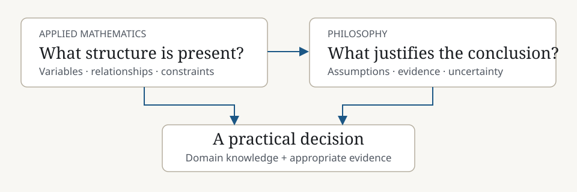
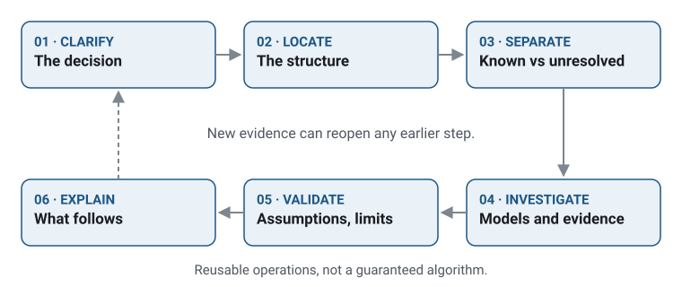

Understanding what can be modeled, what can be inferred, and what remains uncertain.
A mathematical method can be correct for the problem it was given while the problem itself is poorly specified. A plausible explanation can fit the observed evidence without being established fact. And a simplified model can be useful while still concealing an important dependency.
My academic background gives me complementary tools for these situations: applied mathematics for identifying structure and constructing models, and philosophy for examining assumptions, justification, uncertainty and the limits of those models.
Four ways of approaching complexity
Recognize structure
Find established methods that may apply to unfamiliar problems.
Narrow uncertainty
Solve well-specified cases and isolate questions that need evidence or judgment.
Preserve relationships
Break complexity into parts without ignoring critical dependencies.
Test conclusions
Change assumptions and examine whether the result still holds.
Two complementary foundations
Applied mathematics
Structural reasoning
Applied mathematics trains the habit of representing a problem through variables, relationships, constraints and conditions. A useful framework often begins with the recognition that a type of problem has already been studied—even when the specific theorem or method must be researched again. This invites the questions: What structure is present? What conditions must hold? What can be solved or bounded?
Philosophy
Epistemic reasoning
Philosophy examines how concepts are defined, what counts as evidence, how inferences are justified, and what remains unclear. It asks whether an apparent solution actually answers the intended question and whether the assumptions behind the model are warranted. It also helps distinguish not knowing a system’s internals from having no evidence about its behavior.

Structure and justification inform the same decision. Both depend on domain knowledge and evidence.
Neither discipline eliminates the need for domain expertise. Together they support clearer problem formulation and more careful evaluation of what a model or explanation can actually establish.
Eight reasoning principles
Applied mathematics · Structural reasoning
A1
Recognizing Applicable Frameworks
Does this unfamiliar problem belong to a class that already has useful methods?
The starting point is not always remembering a formula. It may be recognizing that an assignment task resembles matching, that a shipping problem has an optimization structure, or that a workflow is a network of dependencies. That recognition makes it possible to research the appropriate tool instead of starting from nothing.
Keep in view: Recognizing a possible framework is not proof that the framework is applicable or that domain expertise can be skipped.
Approach and academic connections
How I approach it: Define the variables and objective, identify candidate methods, then verify their assumptions and limitations before using them.
Related academic concepts — not verified course titles: Operations Research, mathematical modeling, Real Analysis; theorems and their hypotheses.
What can be established now, and what needs additional evidence or human judgment?
Complex projects contain both well-specified cases and ambiguous exceptions. I favor establishing boundaries and handling cases whose rules can be validated before spending effort on unresolved ones. The remainder becomes a focused list of questions rather than a mixture of guesses and apparently finished work.
Keep in view: The process does not promise mathematical convergence or that every ambiguity can be removed.
Approach and academic connections
How I approach it: State assumptions, separate deterministic transformations from conditional inferences, preserve exceptions, and revise the boundary as new information arrives.
Related academic concepts — not verified course titles: Constraint reasoning, iterative numerical methods, optimization, logical distinctions.
Which subproblems can be handled separately, and which dependencies must remain visible?
A complicated problem is often easier to work with as a set of smaller problems. But solving the parts independently can fail if the relationships between them are lost. A graph-like view helps track shared dependencies, interfaces, exceptions and how local decisions affect the system as a whole.
Keep in view: A hierarchy is not always a tree; real workflows may contain shared dependencies, feedback and cycles.
Approach and academic connections
How I approach it: Identify nodes and relationships, examine ownership and handoffs, solve tractable subproblems, then reconnect the results and check consistency.
Related academic concepts — not verified course titles: Network Models, graph theory, systems modeling, recursive decomposition.
Which features of a conclusion survive when the problem changes?
Changing a constraint, representation or input can reveal whether a conclusion depends on essential structure or an accidental choice. Some mathematical properties are invariant under defined transformations; in applied work, sensitivity and robustness tests serve a related—but not identical—purpose.
Keep in view: Passing a few scenarios is not a proof of invariance or universal robustness.
Approach and academic connections
How I approach it: Vary one assumption at a time, look for thresholds and failure cases, and record when the original reasoning stops applying.
Related academic concepts — not verified course titles: Linear Algebra, Real Analysis, sensitivity analysis, topology as a conceptual connection.
Could a reasoning error affect not only a conclusion but also the way evidence is collected or interpreted?
A logical mistake can occur before any calculation begins. If evidence is selected using an unjustified assumption, a sophisticated method may produce internally consistent results from a distorted picture of the world. The genetic fallacy illustrates the danger of treating the origin of a claim as decisive proof of its truth or falsity.
Keep in view: Source reliability often matters; using provenance as evidence about reliability is not itself a fallacy.
Approach and academic connections
How I approach it: Separate provenance from claim validity, inspect operational definitions, examine how data were selected, and distinguish observations from inferences.
Related academic concepts — not verified course titles: Symbolic Logic, Philosophy of Science, epistemology and philosophy of scientific method.
How much complexity can be removed before a representation becomes misleading?
Reduction is unavoidable in practical modeling. A simplified inventory model may be enough to compare resource allocations while being insufficient to certify real packing or operational feasibility. A good abstraction is evaluated against the question it must answer, not by how little detail it contains.
Keep in view: Preserving one decision-relevant property does not mean all properties were preserved.
Approach and academic connections
How I approach it: State the decision the model supports, identify omitted behavior, test whether key relationships survive, and make limitations visible.
Related academic concepts — not verified course titles: Philosophical reductionism, mathematical abstraction, dimensionality reduction, numerical linear algebra.
Which explanation should guide action when the available evidence is incomplete?
Abductive reasoning compares competing explanations and asks which best accounts for what is known. It is useful in troubleshooting and exploratory research, where a single observation may be consistent with several causes. A provisional explanation can guide the next test without becoming an established fact.
Keep in view: The most plausible explanation is not necessarily true; the best-supported explanation and the best action may differ.
Approach and academic connections
How I approach it: Generate alternatives, ask what evidence would distinguish them, examine the costs of further investigation, and choose actions while communicating uncertainty.
Related academic concepts — not verified course titles: Abductive reasoning, Probability, Bayesian updating as a possible formal tool, decision theory.
Conceptual connection; no published demonstration claimed.
P4
Managing What Cannot Be Fully Understood
How can a complex system be evaluated when some internal details remain inaccessible or hard to interpret?
Opacity has different causes: hidden information, complicated dependencies, computational limits, poorly documented interfaces, or difficult-to-interpret model internals. Those problems require different responses. Sometimes the appropriate goal is deeper explanation; sometimes it is bounded behavioral testing, observable interfaces, independent checks or explicit human review.
Keep in view: Validated behavior is not the same as mechanistic interpretability, and no limited test suite proves universal correctness.
Approach and academic connections
How I approach it: Identify the type of opacity, clarify the required assurance, introduce tests and documentation, and avoid claiming understanding beyond the available evidence.
Related academic concepts — not verified course titles: Epistemology, philosophy of science, systems modeling, numerical verification.
These pairings are conceptual interpretations. The same problem can require both kinds of reasoning.
Frameworks and justification
The existence of an established method answers how one might solve the problem. It does not answer whether this problem satisfies the method’s conditions.
Breaking a system into parts helps make it tractable. Evaluating what the split excludes protects against a locally correct but globally misleading solution.
Deterministic checks can narrow the unresolved space; abduction helps evaluate the explanations that remain when the evidence does not uniquely settle them.
Changing inputs or assumptions can test observable behavior without requiring full access to the internal mechanism. It does not eliminate all hidden failure modes.
A mathematical model can rank feasible choices against its stated objective; philosophy and domain judgment are needed to examine whether the objective is appropriate in the first place.
There is no guaranteed sequence that solves every unfamiliar problem. The following operations are reusable and often iterative:

The loop is illustrative: new evidence can return the process to any earlier operation. The six operations are described below.
Clarify the decision
Identify the stakeholder’s question, not just the available data or requested calculation.
Locate the structure
Look for recognizable problem classes, variables, dependencies and constraints.
Separate the known from the unresolved
Handle verifiable rules and isolate ambiguous cases without guessing.
Model and investigate
Select a method whose assumptions fit; seek domain expertise when needed.
Perturb and validate
Change assumptions, compare alternatives, test edge cases and review omitted information.
Explain what follows
Communicate the conclusion, evidence, uncertainty and next decision.
A later discovery may send the process back to an earlier step. Adaptability is not the absence of learning curves; it is having a structured way to find and navigate them.
Connections to portfolio work
The professional responsibilities described elsewhere on this site concern real work. The linked demonstrations are separate public artifacts using fictional data and reduced scope. Their outputs and test results do not measure employer systems or business outcomes.
The Synthetic Data Quality Pipeline distinguishes valid zero values from missing data and routes ambiguous category mappings to exceptions. It illustrates how the boundary between deterministic transformation and unsupported inference can be made explicit. This synthetic Python project is separate from professional inventory migration work.
The Inventory and Shipping Optimization Lab represents a narrow fictional allocation problem through constraints and an objective, then tests multiple scenarios and checks solver output independently. The model deliberately does not claim full container packing or production freight optimization.
The Product Usage Analytics Demo distinguishes event counts, distinct users and funnel progression while documenting filters, denominators and invalid records. It illustrates that measured quantities must be defined relative to the business question before a chart can be trusted.
The B2B Sales Systems Case Study separates quotations, commitments, reservations and shipments in a hypothetical architecture. This makes responsibility and system boundaries clearer without pretending the fictional design is the employer’s deployed system.
The areas below connect academic topics to practical questions. They come from résumé drafts; exact course titles and completion have not been verified against a transcript. They are not a confirmed course list.
Academic area (unverified title)
Connection to practical reasoning
Operations Research / Optimization
Choose among feasible alternatives subject to constraints.
Probability
Represent uncertainty and update expectations.
Mathematical Modeling / Network Models
Formalize interacting variables, relationships and dependencies.
Numerical Linear Algebra
Represent and transform structured data, including matrix computation.
Real Analysis
Examine the assumptions behind limits, continuity and convergence.
Symbolic Logic / Philosophy of Science
Evaluate arguments, evidence and methodological assumptions.
High-Performance Computing
Understand computational constraints on numerical approaches.
Detailed academic projects are deferred until reviewed artifacts are available.
What this page claims
This page describes transferable reasoning foundations, not a guarantee that a particular method works in every domain. Professional decisions still depend on appropriate evidence, stakeholder priorities, technical implementation and domain knowledge. The case studies show selected applications or analogues with their assumptions and limitations made explicit.
Evidence boundary: The professional responsibilities described elsewhere on this site concern real work. The linked demonstrations are separate public artifacts using fictional data and reduced scope. Their outputs and test results do not measure employer systems or business outcomes.